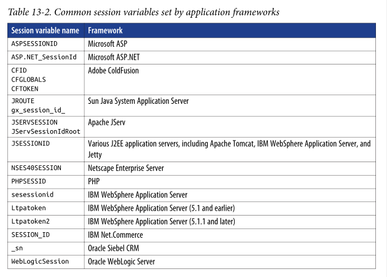
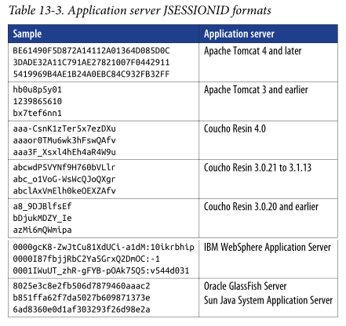

# Identify the Web Server
If you can find what web server is running you might be able to exploit it.
The quickest way is to just check the
Server or
Host header, usually that tells you.
## Tools
### whatweb
whatweb -a 1 <URL> #Stealthy
whatweb -a 3 <URL> #Aggresive### webtech
webtech will identify the web technologies installed.
https://github.com/ShielderSec/webtech## Manually
### Check Host and Server headers
Capture a web request (through Burp etc.) and read the response headers.
Often the web server will described in a HTTP header.
### Check cookies
If the
Server field is obfuscated and you can't retrieve the web server software,
try looking at the cookies instead.
The session tokens can indicate the underlying web application framework.
#### JSESSIONIDJESSIONID values can be used to infer a particular
J2EE web app and server.
